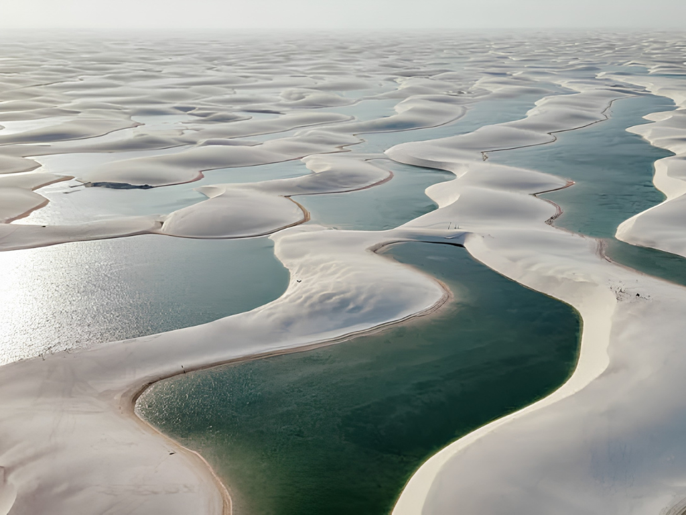

Maranhão é um estado da região Nordeste do Brasil conhecido por sua grande diversidade cultural, histórica e natural. Sua capital é São Luís, cidade famosa pelo centro histórico colonial, reconhecido como Patrimônio Mundial pela UNESCO, e pelas tradições culturais marcadas pelo reggae, pelo bumba meu boi e pelas festas populares. O Maranhão possui uma economia baseada na agricultura, pecuária, comércio e atividades portuárias, além do turismo crescente. Entre suas principais belezas naturais destaca-se Parque Nacional dos Lençóis Maranhenses, conhecido pelas dunas de areia branca e lagoas cristalinas. A culinária maranhense também é muito rica, com pratos típicos como arroz de cuxá, peixe frito e torta de camarão.
